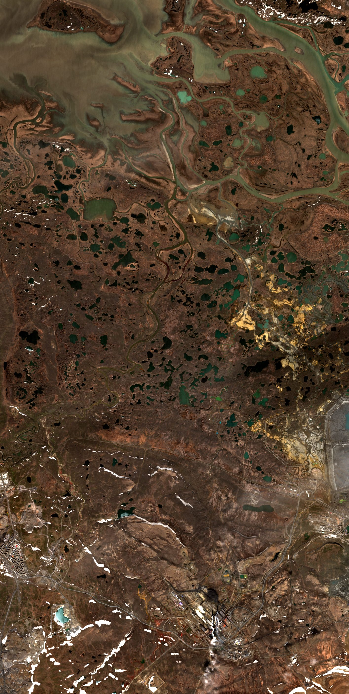

A
Climate is thawing everything
Natural tundra far from any building subsides too, and it follows the summer warmth. Industry and tundra move together.
awaiting data
NASA Space Apps 2026 · Dancing with the SARs
In May 2020 a fuel tank at a Norilsk power plant collapsed and 21,000 tonnes of diesel reached the Arctic rivers. The operator blamed thawing permafrost. We used satellite radar to test whether the ground is really giving way, and where.
Follow the evidence29 May 2020
Tank no. 5 at Norilsk Heat and Power Plant 3 (TPP-3) lost its foundation. Diesel ran down the Daldykan river into the Ambarnaya and towards Lake Pyasino. It became one of the largest oil spills ever recorded in the Arctic.
The official explanation was that the permafrost under the tank had thawed. If that is true, it is not a story about one tank: Norilsk is a city of 175,000 people built on frozen ground. So we asked a broader question: is the ground under Norilsk subsiding in a widespread way, and why?

Natural tundra far from any building subsides too, and it follows the summer warmth. Industry and tundra move together.
Heat from buildings, pipes and plants thaws the ground beneath them. Industrial zones sink much faster than tundra nearby.
No significant seasonal subsidence anywhere. The failure was corrosion or a construction defect: consistent with, though not proof of, a structural cause.
industrial ground natural tundra · expected vertical motion through one summer
Method
Sentinel-1 (C-band, 5.5 cm) and NISAR (L-band, 24 cm) send microwaves that see through cloud and the polar night, and record the echo's phase.
When the ground drops by a few millimetres, the echo arrives slightly later. The phase difference between passes 12 days apart (an interferogram) maps that motion.
Thaw depth grows with the square root of accumulated warmth (Stefan's law). If thaw drives the motion, subsidence lines up with √TDD. Its slope tells us how much each zone sinks per unit of warmth.
We compare industrial ground with two natural tundra controls chosen to match the city's elevation and slope, excluding floodplains and wetlands. A separate zone covers the TPP-3 site. Everything is measured relative to bedrock on the Kharaelakh plateau, which does not thaw, kept 3 km from the underground mines of Talnakh.
Explore
Red sinks, blue rises. Repeats ★ (default) shows only the local motion that has the same sign in 2020 and 2025, relative to the surrounding ~2 km: the reproducible part of the signal. The S1 and NISAR layers are relative to plateau bedrock and include atmosphere. Click a zone to see its summer.
Result
Each point is the mean vertical motion of one zone on one Sentinel-1 date, plotted against the square root of the warmth accumulated so far that year.
Slope of the per-date difference between zones against √TDD. Left of zero: the first zone sinks more per unit of thaw. Bars crossing zero: no detectable difference.
The signal that survives
Water vapour moves the whole lowland by centimetres, but it is different on every pass and every summer. Ground that sinks because of what it is made of sinks in the same place every summer. So we stopped averaging big zones and compared each 30 m pixel with its own ~2 km neighbourhood, separately in 2020 (Sentinel-1A) and 2025 (Sentinel-1C), and asked whether the two maps agree.
Every date is high-passed (2 km), so shared atmosphere is gone. Wetland ground (ESA WorldCover class 90, 48 km²) follows the square root of the thawing degree-days, the shape Stefan's law predicts for a deepening thaw front, in both summers. Other ground types move by less than 2–3 mm.
Wetlands are the only class that sinks relative to its surroundings, in both summers. Built-up ground, bare rock and forest sink less than the ground around them.
For each OpenStreetMap industrial site, quarry and landfill we compared the inside with a ring around it. The sites that behave the same way in both summers are mostly the big plants, and they sink less than their surroundings, TPP-3 included. Only a few small sites and the landfills sink more.
Verdict
Cross-check · NISAR 2026
Sentinel-1 sees the ground from one direction only, so we assumed the motion is vertical. NISAR's first science summer gives us two viewing directions (ascending track 111 and descending track 6). Combined, they separate vertical from east-west motion and test that assumption.
Honesty section
Snow destroys the radar signal every winter, and Sentinel-1 recorded nothing over Norilsk in 2022–2024. We compare summers; we do not measure the cumulative sinking between them.
At 40 m resolution we cannot see one tank's foundation tilt. We measure the ground around TPP-3, not tank no. 5 itself.
The bedrock reference sits ~550 m above the city. Changes in water vapour between passes can mimic uniform lowland sinking. Comparisons between zones at the same height cancel this; absolute rates do not.
They include scatter between dates but not atmospheric noise shared across a zone. Our synthetic test shows zone differences are recovered well; small zones (TPP-3, 3 km²) are noisy.
Line-of-sight motion is converted to vertical on slopes under 5° only. NISAR can test this, but four 12-day pairs are still noisy.
2020 was an exceptionally warm year; 2025 colder. Two summers can reveal a difference between zones, not a climate trend.
Data & reproducibility
git clone https://github.com/MatteoPostiferi999/Nasa
./run_v0.sh # time series → analysis → web files
./run_v0.sh --synthetic # same chain on a known signal